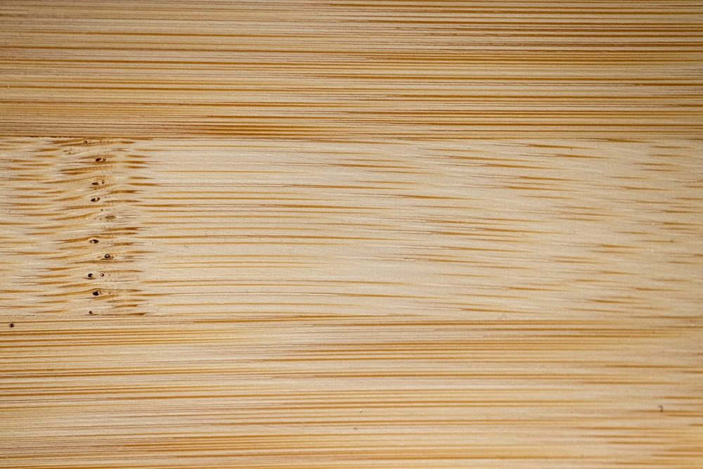
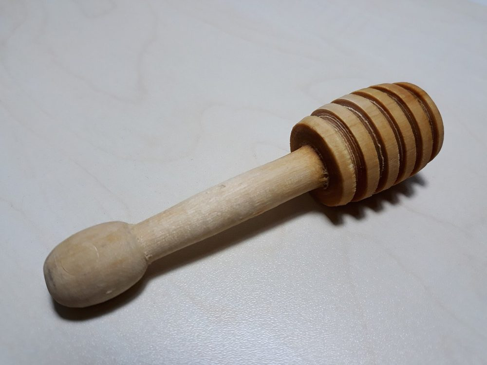
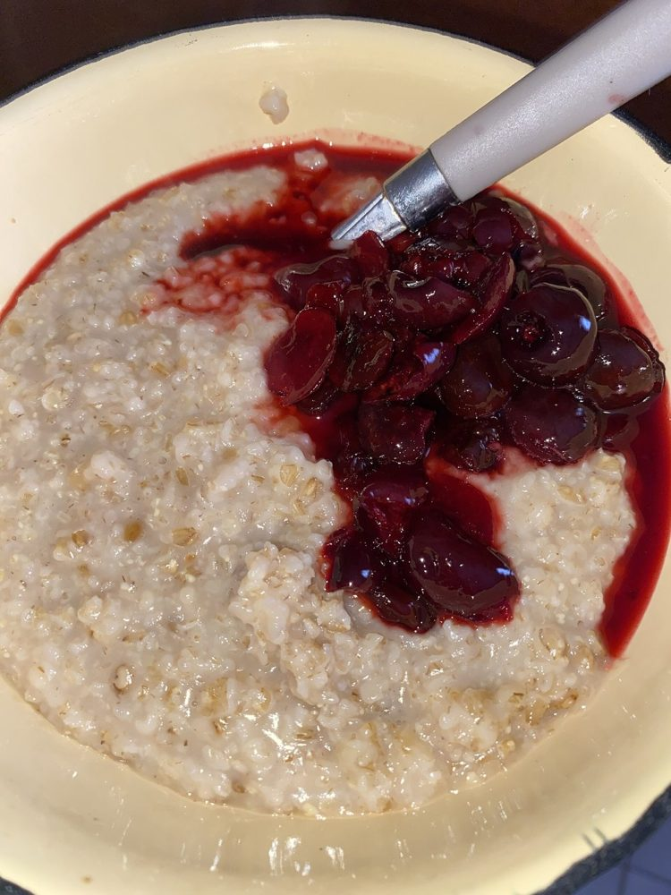
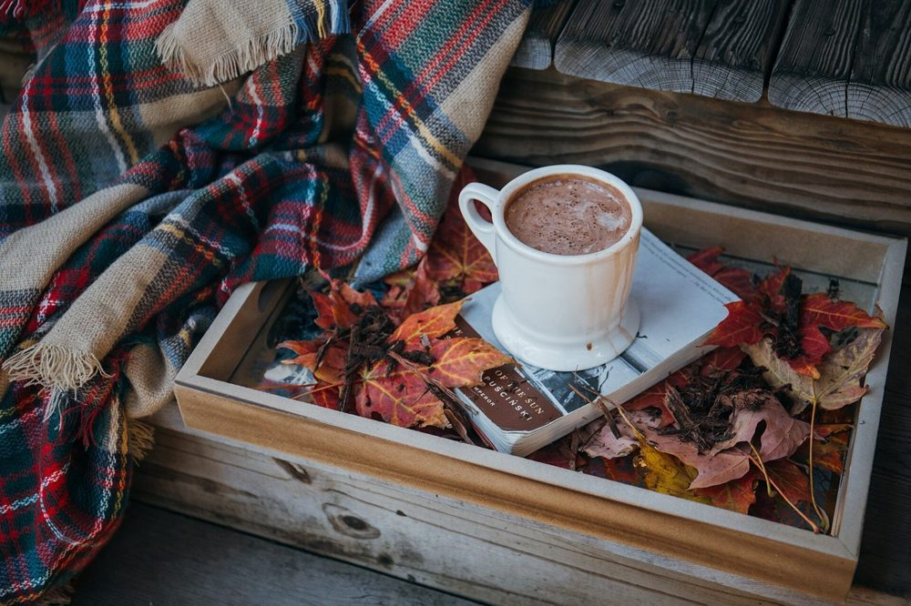
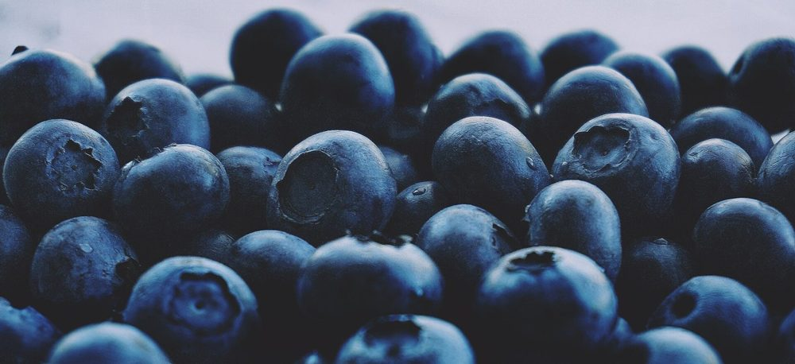

岡山県高梁市川上町・ログハウスカフェ
木のぬくもりの中で、
地元の味を手作りで。
cafe and shop POPEYE は、ログハウスの店内で、地元の食材をたっぷり使った手作りの料理をいただけるカフェです。
お店のこと
ログハウスで、手作りにこだわる。
お店のInstagramでは、「ログハウスカフェ」「地元の食材たっぷり」「手作りにこだわったお店」と紹介されています。カフェのほか、お弁当やオードブルも案内されています。高梁市川上町領家にあります。
店名の由来は確認できていません。このページの見出しなどの言い回しは制作側の表現です。
メニュー・ご提供
カフェ、お弁当、オードブル。
営業時間・定休日・価格・メニューの詳細は確認できていないため「準備中」としています。下の写真はイメージで、お店で提供しているものそのものではありません。







口コミ(イメージ例)
こんな声が届くお店に。
イメージ例
丸太の壁と木の香りが落ち着く店内で、ゆっくり過ごせました。
イメージ例
野菜の味がしっかり感じられて、手作りのやさしさが伝わってきました。
イメージ例
集まりのときにお弁当をお願いしたいと思えるお店です。
上記は制作側が作成したイメージ例で、実在のお客様の声ではありません。
アクセス
お店のご案内
| 所在地 | 〒716-0204 岡山県高梁市川上町領家2462-1 |
|---|---|
| 電話 | 準備中 |
| 営業時間 | 準備中 |
| 定休日 | 準備中 |
| SNS | Instagram @popeye._1986 |
最新の営業状況はInstagramでご確認ください。